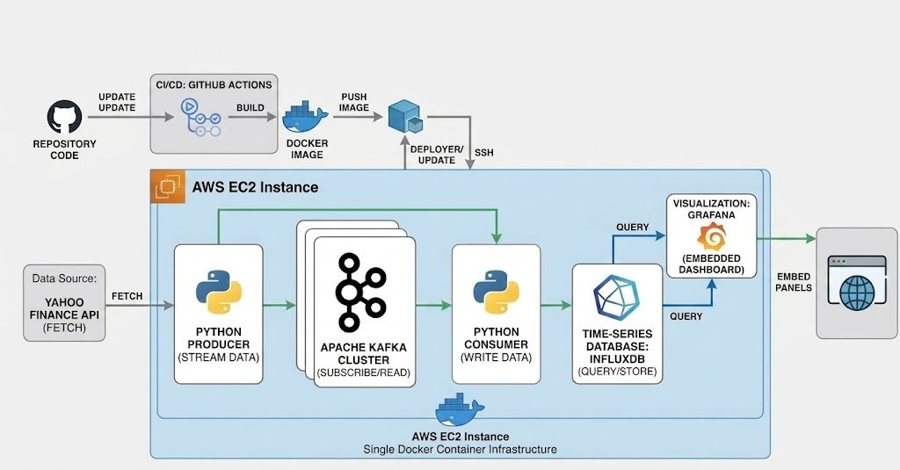

This project is an end-to-end, real-time quantitative analytics platform that monitors global macro-economic indicators, including Bitcoin, Gold, Silver, and the US Dollar Index (DXY). Data is continuously fetched from the Yahoo Finance API via a Python producer and streamed asynchronously through an Apache Kafka cluster. A dedicated Python consumer processes these events and writes them into InfluxDB, a high-performance time-series database. The architecture goes beyond simple data display by incorporating a quantitative engine built directly into Grafana, featuring dynamic threshold alerts, moving average (SMA) crossovers, and a rule-based Market Regime detection algorithm. The entire infrastructure is containerized and hosted on an AWS EC2 instance, secured with a Caddy reverse proxy.
The source code for this project is available on GitHub at the following link: Real-time Finance Dashboard.

Figure: Serverless Aviation Pipeline with PySpark & GCP CI/CD